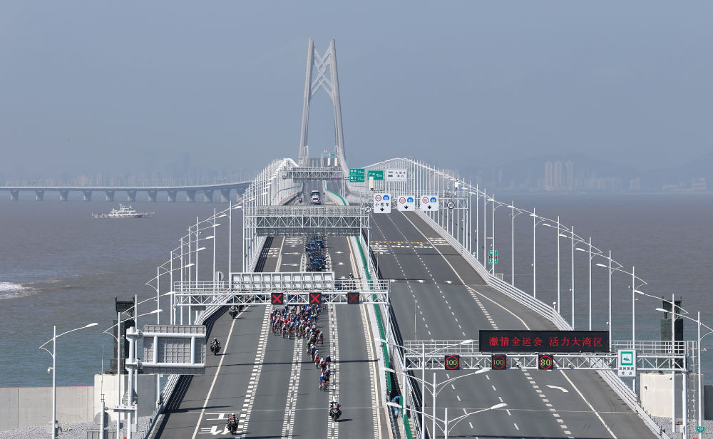

粤港澳首次联合办赛，开创跨境办赛先河
粤港澳首次联合办赛，开创跨境办赛先河，彰显"一国两制"制度优势

制度优势彰显：大湾区协同发展新模式
十五运会组委会副主任、国家体育总局副局长佟立新表示，通过举办十五运会，彰显了"一国两制"制度优势，推动了大湾区协同发展，探索出"一事三地、一策三地、一规三地"的新机制，促进了人员、物资、信息等要素高效流动，为区域一体化发展积累有益经验。
三大创新机制
- 一事三地 - 同一事项三地协同办理
- 一策三地 - 统一政策三地共同实施
- 一规三地 - 统一标准三地共同遵循
据悉，国家体育总局将和粤港澳三地签署《关于加强体育合作、促进融合发展的协议》，充分发挥体育在粤港澳大湾区融合发展中的独特作用和综合价值。
协同创新：多领域深度合作
十五运会组委会副主任、广东省委常委王曦表示，粤港澳三地以联合办赛为纽带，在场馆布局、交通衔接、信息系统、食品安全、市场开发、文旅融合等领域，开展了多项协同创新的实践。
"这些机制不仅服务于赛事本身，更为未来粤港澳在更广泛领域的合作提供了可复制、可推广的实践范例。" —— 王曦，十五运会组委会副主任、广东省委常委
跨境赛事：港珠澳大桥上的精彩对决

特别值得一提的是，本届全运会的公路自行车男子个人赛线路途经港珠澳大桥，实现了跨境"零减速通关"办赛，打破了地域与制度壁垒。这一创新举措不仅为赛事提供了独特的赛道体验，更展现了"一国两制"下湾区建设的丰硕成果。
香港视角：回归28周年的亮丽答卷
十五运会组委会副主任、香港特别行政区政府政务司司长陈国基表示，粤港澳大湾区首次联合办赛的成功经验，不仅是一个重要里程碑，让世界看到中国的实力，也是香港回归祖国28周年，"一国两制"成功实践的有力证明。
"全运会的成功举办，不仅提升香港举办大型体育盛事的能力，更可推动大湾区城市的深度融合与协作，促进大湾区内的民心交流，为三地合作协办大型盛事奠定坚实的基础，进一步提升大湾区的整体竞争力，共同为国家发展作出贡献。" —— 陈国基，香港特别行政区政府政务司司长
澳门行动：构建高效便捷通关体系
十五运会组委会副主任、澳门特别行政区政府社会文化司司长柯岚表示，未来澳门将进一步联合粤港搭建沟通平台，促进三地场馆资源、运营机构、文旅企业等开展精准合作，实现资源高效利用。
同时，在"无感通关"方面，澳门将继续推动横琴口岸人脸识别通关系统优化和升级，进一步增加智能通道数量，为日后跨境赛事举办开设便捷通关渠道打下更好的基础。
展望未来：区域一体化发展新篇章
粤港澳三地联合办赛的成功实践，为"一国两制"框架下的区域合作树立了新的标杆。这一创新模式不仅推动了体育事业的协同发展，更为三地在经济、科技、文化等领域的深度融合探索了路径。
随着《关于加强体育合作、促进融合发展的协议》的签署，粤港澳大湾区将在更广阔的舞台上展现协同发展的强大动能，为建设国际一流湾区和世界级城市群贡献力量。